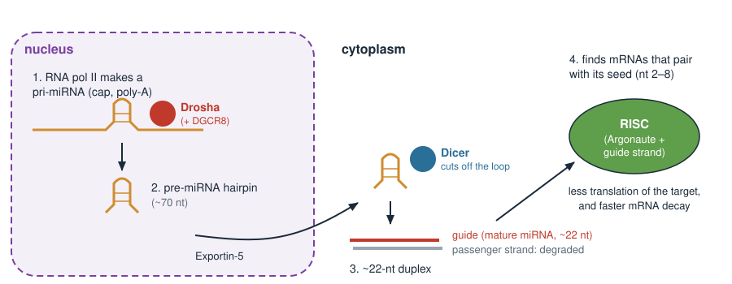
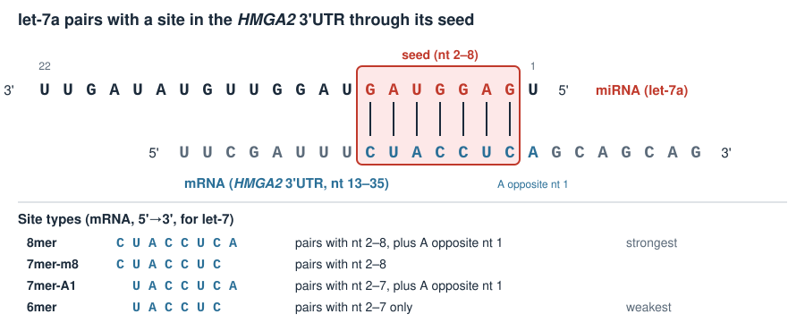

Part 6: Gene regulation & development. RNAi, microRNAs and long non-coding RNAs
Basic and molecular genetics (5MO104)
About this lecture
Transcription is not the last word. Small RNAs, about 22 nucleotides long, pair with mRNAs and turn them down. They were found twice: once by geneticists studying worm larvae that developed at the wrong pace, and once by researchers trying to switch genes off with antisense RNA.
lin-4 and let-7: how a genetic screen found the first microRNAs, and how to read its genetics.
Seed matching: from a miRNA to its target site, step by step; site types; how often sites occur by chance.
siRNA vs miRNA; designing an siRNA; long non-coding RNAs such as XIST.
RNAi as a lab tool for reverse genetics, and how to interpret it.
Book: Hartwell, Genetics: From Genes to Genomes, the chapter on RNA-based regulation (non-coding RNAs).
A post-transcriptional layer
RNA
Size
Made from
Acts on
Effect
miRNA
~22 nt
its own gene (hairpin)
many mRNAs, partial pairing via the seed
less translation, mRNA decay
siRNA
~21 nt
long double-stranded RNA (virus, transposon, or the experimenter)
mRNAs with perfect complementarity
cleavage of the target
piRNA
24–31 nt
piRNA clusters, germ line
transposon RNAs
silences transposons in the germ line
lncRNA
> 200 nt
its own gene
chromatin, other RNAs, proteins
many; e.g. XIST silences an X
Humans have about two thousand miRNA genes in miRBase; a typical miRNA has hundreds of predicted targets, and most human mRNAs carry at least one conserved miRNA site.
C. elegans is about 1 mm long and transparent, so every cell can be followed under the microscope. Each cell division in the larva happens at a fixed stage (L1 to L4, then adult). Heterochronic mutants do the right things at the wrong time:
lin-4(lf): cells repeat L1-type divisions in later stages (retarded). Recessive.
lin-14(lf): cells skip L1 fates and jump ahead (precocious): the opposite phenotype.
lin-14(gf): dominant alleles that look like lin-4(lf). They delete part of the lin-14 3′UTR; the protein is normal.
Reading the heterochronic genetics
Genotype
LIN-14 protein after L1
Phenotype
wild type
low (turned down when lin-4 RNA appears)
normal timing
lin-4(lf)
stays high
retarded: repeats L1 fates
lin-14(lf)
none, even in L1
precocious: skips L1 fates
lin-14(gf), 3′UTR deleted
stays high
retarded
lin-4(lf); lin-14(lf)
none
precocious, like lin-14(lf)
Epistasis: opposite single-mutant phenotypes, and the double looks like lin-14. So lin-14 acts downstream, and lin-4 is a negative regulator of lin-14: lin-4 ⊣ lin-14 → L1 fates.
Dominance:lin-14(gf) escapes regulation on its own mRNA, whatever the other allele does: dominant and cis-acting, like Oc. One copy of lin-4 makes enough RNA to act on both lin-14 alleles in trans.
lin-4 is a small RNA
In 1993 the Ambros and Ruvkun labs cloned lin-4 and found that it makes no protein: only a ~22-nt RNA.
The lin-4 RNA is partly complementary to repeated sites in the lin-143′UTR: exactly the region deleted in the dominant lin-14(gf) alleles.
LIN-14 protein falls in late L1, while lin-14mRNA stays much the same: regulation after transcription.
For seven years this looked like a worm curiosity. Nobel Prize 2024.
The lin-14 3′UTR is a cis-acting element, like lacO: deleting it makes the gene escape regulation, dominantly. The lin-4 RNA is the trans-acting factor.
let-7: the first conserved microRNA
In 2000, let-7 was found by the same kind of screen: another heterochronic gene, again a ~22-nt RNA, acting on the 3′UTRs of later-stage regulators (lin-41, hbl-1).
let-7 turned out to be conserved: the mature let-7 of worms, flies and humans is identical over its first 22 nucleotides, and it is expressed at the same transition, from larval/embryonic to adult fates.
Suddenly small regulatory RNAs were not a worm oddity. Cloning projects found hundreds in animals and plants: they were named microRNAs.
Human let-7 targets include HMGA2, LIN28B and RAS genes; let-7 is often low in tumours, and HMGA2 is a growth-promoting oncogene.
RNA interference
Fire, Mello and colleagues (1998) injected RNA into worms to silence the unc-22 gene (loss of unc-22 makes worms twitch):
Injected RNA
Silencing
sense strand
weak
antisense strand
weak
double-stranded RNA
strong, with only a few molecules per cell, spreading through the body and into the progeny
Double-stranded RNA is cut by Dicer into ~21-nt siRNAs; one strand guides Argonaute (in RISC) to cut any mRNA that matches perfectly. Natural roles: defence against viruses and transposons. (Nobel Prize 2006.)
How a microRNA is made

Drosha cuts the hairpin out in the nucleus; Dicer cuts off the loop in the cytoplasm; the guide strand goes into Argonaute (RISC). siRNAs use the same Dicer and Argonaute, but start from long double-stranded RNA.
Seed matching

Animal miRNAs find targets mainly through the seed, nucleotides 2–8 from the 5′ end. A target site in the mRNA (usually the 3′UTR) is the reverse complement of the seed, sometimes with an A opposite nucleotide 1.
From seed to site, step by step
Worked example: human let-7a-5p, written 5′→3′.
miRNA 5'-U GAGGUAG UAGGUUGUAUAGUUU-3'
position 1 2345678
seed GAGGUAG (nt 2-8)
complement CUCCAUC (A<->U, G<->C, same order)
reverse CUACCUC (read backwards: now 5'->3')
site in mRNA 5'-...CUACCUC...-3' 7mer-m8
5'-...CUACCUCA...-3' 8mer (plus an A opposite nt 1)
Count from 1 at the 5′ end; the seed starts at 2.
Complement each base (in RNA: A↔︎U, G↔︎C).
Reverse it, so that the site is written 5′→3′ like the mRNA.
Four kinds of site
Site
mRNA pairs with
Example for let-7 (seed GAGGUAG)
Strength
8mer
nt 2–8, plus an A opposite nt 1
CUACCUCA
strongest
7mer-m8
nt 2–8
CUACCUC
strong
7mer-A1
nt 2–7, plus an A opposite nt 1
UACCUCA
weaker
6mer
nt 2–7 only
UACCUC
marginal
All four share the 6-nt core that pairs with nt 2–7 (here UACCUC).
To classify a match, look at the base before the core (a C pairs with nt 8) and the base after it (an A sits opposite nt 1).
The A opposite nt 1 does not base-pair; Argonaute has a pocket that prefers an A there.
How often does a site turn up by chance?
A site is a fixed word of k nucleotides. In random sequence with equal base frequencies, a given word occurs about once every 4k nucleotides.
Site length
Chance of a match at one position
Expected per 1000 nt of 3′UTR
6 nt
1/46 = 1/4096
≈ 0.24
7 nt
1/47 = 1/16 384
≈ 0.06
8 nt
1/48 = 1/65 536
≈ 0.015
An mRNA is single-stranded: count one strand only (for a transcription-factor motif in DNA you count both).
Over thousands of genes, chance alone gives many matches per miRNA. A single 7-nt match means little.
More convincing: a conserved site, several sites in one UTR, a stronger site type, and miRNA and mRNA made in the same cells.
Check yourself: seeds and sites
Answers in the notes.
A miRNA starts 5′-UAAGGCACGCGG…-3′. What is its seed, and what is its 7mer-m8 site?
A student writes the let-7 site as CUCCAUC. What went wrong?
In a 3′UTR you find 5′-…GUACCUCA…-3′. Which kind of let-7 site is this?
Why is one 7-nt match in a long 3′UTR weak evidence that the gene is a target?
siRNA vs miRNA
siRNA
miRNA
Source
long dsRNA (virus, transposon, experiment)
genome-encoded hairpin
Processing
Dicer
Drosha, then Dicer
Pairing with target
full length, perfect
mostly the seed (nt 2–8)
Typical outcome
target mRNA cut by Argonaute
translation down, mRNA decay
Targets per small RNA
one (the matching gene)
hundreds
Natural role
defence (viruses, transposons)
gene regulation, development
As a lab tool
knock down a chosen gene
— (but siRNAs can act like miRNAs: off-target effects via their seed)
Designing an siRNA
The guide (antisense) strand must pair perfectly with the target mRNA, so it is the target’s reverse complement. Worked example with a made-up 19-nt target stretch:
target mRNA 5'-GAUCCAGUUCGAAGCAUCU-3'
complement CUAGGUCAAGCUUCGUAGA (3'->5')
guide strand 5'-AGAUGCUUCGAACUGGAUC-3' (reversed)
guide seed GAUGCUU (nt 2-8)
off-target site AAGCAUC (any mRNA with this 7-mer)
The guide cuts the intended mRNA, which matches all 19 nt.
Its seed can also pair, miRNA-style, with any 3′UTR that has the seed’s site: off-target knockdown of many genes, each a little.
Regulatory RNA in genetics and disease
Target-site mutations act in cis. Chromosomal rearrangements in benign tumours (e.g. lipomas) cut HMGA2 off from its 3′UTR. The truncated mRNA loses its seven let-7 sites, escapes repression, and makes too much protein: a dominant gain of function, like lin-14(gf).
miRNA mutations act in trans. A point mutation in the seed of MIR96 causes dominant progressive hearing loss in humans (and in the diminuendo mouse). The mutant miRNA loses its normal targets and gains new ones.
The miRNA pathway is a drug target. Patisiran, an siRNA drug approved in 2018, silences the TTR gene in hereditary transthyretin amyloidosis.
miRNA genes: dominance and redundancy
Loss of one copy of a miRNA gene is usually recessive: the other copy makes enough RNA to act on all targets in trans.
A seed mutation can be dominant: the mutant miRNA from one allele stops repressing its old targets and represses new ones (MIR96).
Many miRNAs come in families that share a seed (the let-7 family: let-7a to let-7i and miR-98 in humans). Members target the same sites, so they can cover for each other.
So deleting one miRNA gene often gives no visible phenotype: in C. elegans, most miRNA genes deleted one at a time showed no obvious defect (Miska et al., 2007). Removing the whole family does.
This is genetic redundancy, as with the duplicate genes behind a 15 : 1 ratio (Extensions to Mendel).
Long non-coding RNAs
lncRNAs are transcripts longer than 200 nt that do not encode a protein. Some work in cis, on the chromosome they are made from; others in trans.
XIST (from the last unit): made from the X that will be silenced; coats that X in cis and recruits silencing complexes. Deleting XIST on one X means that X cannot be inactivated.
Many lncRNAs act as scaffolds for chromatin complexes, or as decoys that soak up miRNAs or proteins.
Many more are transcribed but of unknown function. Genetics is the test: does deleting it, or its promoter, change a phenotype?
RNAi as a tool for reverse genetics
Forward genetics goes from a phenotype to the gene. Reverse genetics starts from a gene and asks: what happens if I remove it? RNAi made this easy.
Worms: feed them E. coli that make dsRNA against a gene. A library covering about 86 % of predicted C. elegans genes allowed genome-wide RNAi screens (2003).
Flies: transgenic hairpin RNAs (often combined with tissue-specific GAL4 drivers, next unit).
Mammalian cells: transfect siRNAs or express shRNAs.
Today CRISPR–Cas9 knockouts are often preferred, but RNAi remains useful for genes whose knockout is lethal, and for tuning dosage.
Interpreting an RNAi phenotype
RNAi knockdown
Mutant allele (e.g. CRISPR null)
What it changes
the mRNA, in trans, all copies at once
the gene, one allele at a time
Strength
partial: a hypomorph; varies between cells and experiments
can be a clean null
Lethal genes
can still study later roles
null may die early
Complementation test
not possible: there is no allele to put in trans
possible
Main pitfall
off-target effects through the seed
linked background mutations
Controls for an RNAi result: two or more independent siRNAs against the same gene; show that the target mRNA or protein went down; rescue with a version of the gene that the siRNA cannot match (silent changes in the target site).
Common mistakes
Counting the seed from 0, or from nt 1. The seed is nt 2–8; nt 1 is not part of it.
Complementing without reversing. A site written 5′→3′ is the reverse complement of the seed.
Mixing DNA and RNA letters. A UTR from a FASTA file has T; a miRNA in miRBase has U.
Counting both strands for a miRNA site. The mRNA is single-stranded.
“An siRNA hits only its target.” Its seed can act on hundreds of mRNAs.
“A miRNA mutation must be recessive.” Seed mutations can be dominant (MIR96); site deletions in the target are dominant and cis (lin-14(gf), HMGA2).
“No knockout phenotype means no function.” Family members with the same seed may cover for it.
Summary
Concept
Key fact
lin-4 / lin-14
first miRNA (1993); lin-14(gf) = 3′UTR deletions, dominant, cis; lin-4 acts in trans; lin-14 epistatic
let-7
first conserved miRNA (2000); identical in worm and human
nt 2–8; site = reverse complement; 8mer > 7mer-m8 > 7mer-A1 > 6mer
Chance
a k-nt site every 4k nt, one strand; 7mer ≈ every 16 kb
siRNA vs miRNA
perfect pairing, one target, cleavage vs seed pairing, many targets, repression
siRNA design
guide = reverse complement of the target; its seed gives off-targets
Disease
HMGA2 3′UTR loss (cis, oncogenic); MIR96 seed mutation (trans, deafness)
Redundancy
miRNA families share seeds; single knockouts often have no phenotype
lncRNA
> 200 nt, no protein; XIST acts in cis
RNAi as a tool
knockdown = hypomorph; no complementation; controls: several siRNAs, rescue
Where this leads
Next: Development & model organisms. Forward screens like the heterochronic screen, reverse genetics with RNAi and CRISPR, and the transcription-factor cascades that build the fly embryo. Redundancy returns with the four mammalian Hox clusters.
Part 7: Cancer genetics.let-7 and HMGA2 are one example of how loss of regulation makes an oncogene.

.jpg){kind=link}
.jpg){kind=link}